Monitor. Inspect. Tag. Track. — one signed chain from code to production.
Today: the agentic-code blind spot · the four-capability platform · open-source core · live demo · what's next
Executive Overview — June 2026